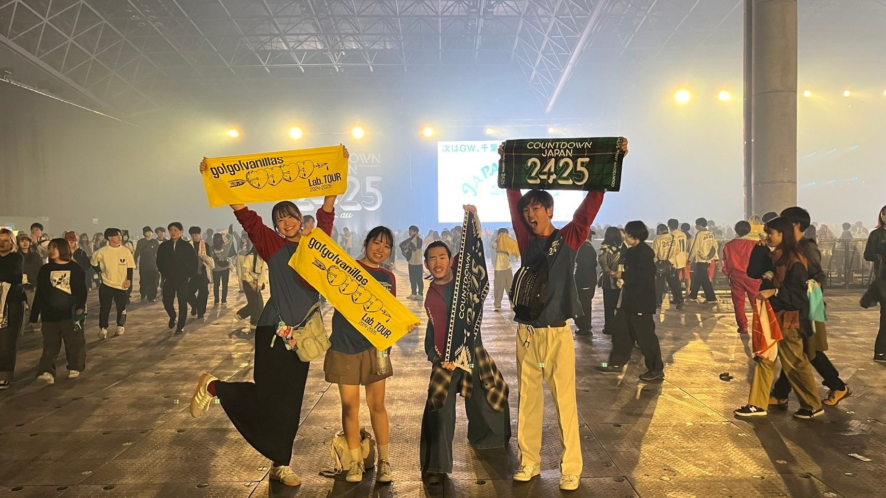

My name is Ayuko Okuzawa. I'm an exchange student from Japan. My home university is the University of Tokyo. In my home university, I learned agriculture, but I'm taking data science and computer science courses. It is because the theme of my reseach is analyzing and predecting the function of protain. In Japan, I learned programming in the student club, and I did an internship as an frontend engineer. The company I worked is making a web application for marketing. I implemented the functions to make and distribute emails, SNS or messages.
My hobbies are krocheting and watching youTube. Therefore, I usually watch youTube while I krochet. A few years ago, I was taught knit and krochet in my junior high school and high school, and I restarted them after I came the U.S. I'm now making hat for winter. My friend requested a hat as a christmas present, so I am going to make it after I complete my hat.
I also like listening to music. Especially, I like Japanese Rock, so I often go to the music festival in Japan. In the music festival, I enjoy not only the music but also the foods served in food stalls.

email: ayuko09381002@icloud.com